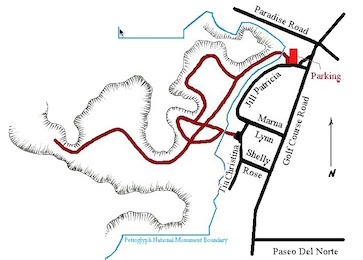
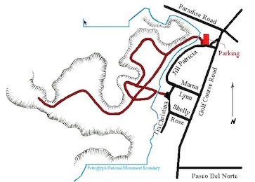

Hike New Mexico
w/ Tom & Ken
Piedras Marcadas Trail
| Difficulty | Round-trip | Type | Elev. Chg. | Exposure | Wow Factor | Facilities | Seasons | Get There |
|---|---|---|---|---|---|---|---|---|
| Easy | 2 miles | Out-and-back | 20 ft | Full sun | Petroglyphs | None | All | Directions |


 

- Apr 13, 2013: Easy, sandy, but exposed trail
- Oct 9, 2015: Ethan visits and photographs the amazing
- Apr 13, 2013: A creation of the mind
- Apr 13, 2013: One of many odd characters
- Apr 13, 2013: Symbols of human inhabitation
- Oct 16, 2014: One of the more highly decorated
- Apr 13, 2013: Where did he come from?
- https://www.flickr.com/photos/139088815@N08/27715628176/in/album-72157669829880176
- https://www.flickr.com/photos/139088815@N08/27649153302/in/album-72157669829880176
- https://www.flickr.com/photos/139088815@N08/27675142931/in/album-72157669829880176
- https://www.flickr.com/photos/139088815@N08/27471569440/in/album-72157669829880176
- https://www.flickr.com/photos/139088815@N08/27675163871/in/album-72157669829880176
- https://www.flickr.com/photos/139088815@N08/27675118841/in/album-72157669829880176
- https://www.flickr.com/photos/139088815@N08/27749655365/in/album-72157669829880176
Piedras Marcadas ("Marked Rocks") is the northernmost site along the roughly 17-mile edge of lava flow just northwest of Albuquerque, forming a significant part of the Petroglyphs National Monument. The trail has the most of the three sites in terms of petroglyph density, and is located close to a residential area. Once on the trail, however, the area feels much more remote as the homes and businesses are barely visible. The petroglyphs, formed by scratching the surface of the hard black coating covering the lava boulders, are estimated to be 400-700 years old. The newer formed glyphs are brighter, as the older ones continue to accumulate new coatings from the constant weathering. The Natonal Park Service website contains further park information. The City of Albuquerque also maintains a site for the canyon, though the page header is a photo from the ABQ Volcanoes.